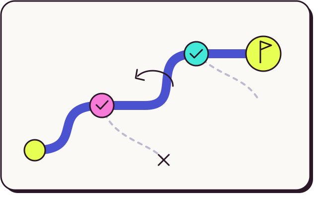

Ведёшь проект или бизнес
Сам ищешь первых клиентов, выбираешь между направлениями роста или пытаешься договориться с сооснователем. Возможно, проект держится на привычке и пора решить, продолжать ли его.

Помогаю принять сложное решение в бизнесе или своём проекте. Разберём, что сейчас важнее, и выберем шаг, который можно проверить.

Индивидуальная работа
Тебе пора принять решение, а вариантов слишком много. Или ты уже знаешь, что делать, но всё откладываешь первый шаг.
Сам ищешь первых клиентов, выбираешь между направлениями роста или пытаешься договориться с сооснователем. Возможно, проект держится на привычке и пора решить, продолжать ли его.
Или только учишься его продавать. Хочешь поднять цену, перейти от работы один на один к другому формату или понять, почему после предложения люди пропадают.
Есть идея, пет-проект или умение собрать прототип. Нужно выбрать, кому это может пригодиться, и проверить идею, пока ты ещё в найме.
Формат не подойдёт, если ты хочешь передать мне решение или получить подтверждение того, что уже решил, без готовности проверить свои предположения. Для регулярной работы важно выделять время на пробы между встречами.
Задачи и границы
Вникаю в то, как ты видишь ситуацию, и вместе с тобой ищу способ сдвинуть её с места.
От цели к действиям
Разберём, куда ты хочешь прийти и где находишься сейчас. Разложим путь на этапы и выберем, что проверить первым.

Сформулируем результат и признаки, по которым ты поймёшь, что приблизился к нему.
Посмотрим на опыт, компетенции, время и то, что сейчас мешает двигаться.
Выберем приоритет, отложим лишние ветки и договоримся о конкретном действии.
Если продолжаем, разберём результат пробы. Даже неудачная попытка даёт данные для следующего решения.
Работа с командами
Продуктовая стратегия, научная коммуникация и производство материалов для сложных проектов.
Научная логика, мастер-ролик и адаптации для врачебных точек контакта.
Смотреть направление →Помогаю показать путь пользователя, продуктовую механику и ценность без технологического шума.
Смотреть подход →Концепция, драматургия, визуальный мир и сборка решения, которому нужно выйти за пределы одного формата.
Кейсы Anix ↗Траектория
Сильнее всего работаю на пересечении дисциплин. Когда сложной идее нужны стратегия, язык, технология и люди.
Молекулярная биофизика, структурная биология, моделирование и публикации.
Авторская и режиссёрская работа, актёрский опыт, семь лет преподавания драматургии.
Цифровые команды, гипотезы, MVP, работа с рынком и сложными заказчиками.
В Anix соединяю стратегию, режиссуру, R&D и продуктовые решения.
Научный фундамент
ФБМФ МФТИ, молекулярная биофизика, структурные исследования белков и антимикробных пептидов. Этот опыт учит терпению к сложности и уважению к точности.
Наука в медицинских проектах →Публикации / DOI
Театр и авторство
В театре «Точка» МФТИ я работал как автор, актёр и режиссёр, а затем семь лет преподавал драматургию. Пишу прозу и сценарии. В коммерческих проектах этот опыт помогает понять конфликт, движение истории и причину досмотреть её до конца.


Публичные заметки
Предпринимательство и строительство компании — в одном канале. Сценарии, театр, проза и музыка — в другом.
Первый разговор
Напиши мне, что происходит, между чем выбираешь и что уже пробовал. Скажу, чем могу помочь в твоей ситуации.